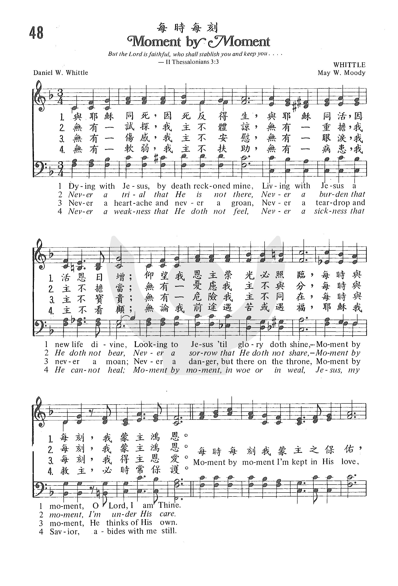

1233 439 Moment by Moment (Dying with Jesus) _ D.
W. Whittle 時刻蒙恩 (时刻交托主)
|
|
生命聖詩 - 339
時刻蒙恩 (Moment by Moment) |
|
1 Dying with Jesus, by death reckoned mine;
Living with Jesus, a new life divine;
Looking to Jesus till glory doth shine,
Moment by moment, O Lord, I am thine.
Refrain:
Moment by moment I’m kept in his love;
Moment by moment I’ve life from above;
Looking to Jesus till glory doth shine;
Moment by moment, O Lord, I am thine.
2 Never a trial that he is not there,
Never a burden that he doth not bear,
Never a sorrow that he doth not share,
Moment by moment, I’m under his care. [Refrain]
3 Never a weakness that he doth not feel,
Never a sickness that he cannot heal;
Moment by moment, in woe or in weal,
Jesus, my Savior, abides with me still. [Refrain]
|
與耶穌同死，我與主合一，與祂同復生，活出新生命；
仰望我恩主，榮光必照臨，我每時每刻為救主子民。
沒有一試探，我主不開路，沒有一重擔，我主不代負，
沒有一掛慮，我主不分憂，我每時每刻都蒙主眷佑。
沒有一傷感我主不安慰，沒有一眼淚我主不寶貴，
沒有一危險我主不搭救，我每時每刻都蒙主保佑。
沒有一軟弱我主不扶持，沒有一病患我主不能醫，
每時每刻我遇福或遇禍，耶穌我救主，時常保佑我。
副歌：
每時每刻，我蒙主愛保守，每時每刻，屬天生命領受，
仰望主耶穌榮光必照臨，我每時每刻為救主子民。 |
https://www.zanmeishige.com/tab/25365.html?songbook=1&index=48


http://pt.fuyinchina.com/m/view.php?aid=4276
 |
| |
|
http://www.xueshengshi.com/?p=7572
简介（一） （来源：《赞美诗新编史话》）
经文：“我是葡萄树，你们是枝子；常在我里面的，我也常在他里面 ，这人就多结果子；因为离了我，你们就不能作什么“ (约15：5)
这首诗是由“我时刻需要主” ( 《新编》第284首)发展而来的，是父女两人合作的一首诗。它的产生经过是这样：
有一次，在美国芝加哥城召开世界贸易大会时，举行了宗教集会，会众同唱《我时刻需要主》。
这时有一位从英国来的平信徒对惠特尔 (事略参阅第206首)说，我想这首诗表达的意思还不够确切，因为他只说我时刻需要主 (英文原意为：我每小时都需要主 I
need Thee every hour)，这太不够了，岂止是每小时，而是每秒每分，时时刻刻须臾不可离主。
 Whittle, D. W. (Daniel Webster), 1840-1901
Whittle, D. W. (Daniel Webster), 1840-1901
惠氏听到后，虽然口头上说，时刻需要主即含有随时之意，但思想上也觉得这位信徒所说的不无道理。当即集中思想另写了这首《时刻蒙恩歌》，首句为“与耶稣同死，因死反得生，与耶稣同活，因活更蒙恩”(也有译作：“与基督同死，主死算为我，与基督同活，我得新生命”)。接着说无论是在试探、悲伤、软弱的时刻里，每时每刻都有主的同在与恩佑。这首诗后来又传到英国，由英国又传到南非，并且传遍了世界各地。它的歌名又叫《每时每刻》或译作《时时刻刻
(MOMENT BY MOMENT) 。
曲调含叫《惠特尔 (WHITTLE)》。用以纪念曲谱的作者梅.惠特尔(惠特尔的女儿)。
这首歌词与曲列入桑基 (事略参阅第54首)等人所编的《圣歌》第一集中
(1896年出版)。
后来惠特尔的女儿梅 (May Whittle，1870— 1963)与慕迪的儿子结婚，就名为 (May Whittle
Moody)。从此，在福音布道圣工上志同道合的惠特尔与慕迪终于成为亲家。

诗歌与唱诗：
诗班在二次创作这首诗歌时，要清楚这首诗歌的音乐表情是虔敬、深情地。
指挥是教会圣诗班的组织者、引领者，更是教会圣乐的指导者。指挥要运用纯熟的指挥技术，通过科学的方法和手段，将赞美诗的灵性与悟性体现在献诗上。
教会圣诗班都是利用课余时间排练的，排练时间和诗班员的参与都有较大的随机性。加上诗班员的更换或诗班员的流失，也有个别教会诗班员因着各种原因平时不参加诗班训练，献诗时凑人数等因素，使圣诗班唱诗能力有较大的不稳定性。对此，作为诗班指挥者要有一个清晰的认识。
诗班对唱诗排练是指挥的事工中心，排练的效率和质量，直接关系到诗班唱诗质量，献诗的效果是判断排练工作时效的标准依据。
在排练事工中，诗班指挥的听与讲是最重要的。听是发现问题，讲是明确目的和要求。只要解决好听与讲这两个关键环节，排练中遇到的其他难题便会迎刃而解了。今天先来分享一下，听。
听，首先是指挥应具有较好的音乐听觉，有敏锐的辨别力，听辨出细微的音高、音色差别，其次是通过听发现问题。怎样听呢?听什么内容?
首先，听全面。
指挥必经全面熟悉合唱作品，包括思想内容，曲式结构，节奏音型、旋律特点，伴奏织体等，并发挥对赞美诗歌的二次创作的属灵艺术想象力和创造力，制订诗歌处理的设想方案和排练计划。排练时要从整体把握诗歌作品的基本面貌，然后再分步骤抓重点找特点整合处理这首赞美诗。
听全面就是以乐谱为标准，检验听到的是否与总谱有误差、有距离、有不同。排练初期要求诗班员掌握大体框架，不强调支未细节；指挥者要听看结合，使诗班员对赞美诗有一个总体认识，了解声音表现与歌曲的关系，了解声部与声部，男声与女声之间的关系等。
其次，听细节。
包括听音准、音色、节奏、声部、层次、平衡等。听音准，就是对照乐谱、验证各声部、各诗班员的发声演唱是否有错音错谱、忽高忽低、跑调现象。耳朵像移动探测器，到处搜寻，发现问题找出症结，对症下药逐一解决。听音色，就是倾听各诗班员的发音是否正确，是否圆润，是否吐字清晰，字正腔圆，听字头，听声韵是否一致纯净；听诗班员是否有喊声尖声，喉音鼻音等，以及时纠正。听节奏、声部、层次、平衡之间是否有机统一，并要求诗班员先用准确良好的发声方法轻轻地唱。
将音准，节奏把握熟练准确后，提示各声部之间相互倾听，彼此靠拢，主动寻求声音和谐节奏配合，声音大的要收拢，声音松散的要靠紧，虚的充实，太实的声音要唱在气上。听节奏的速度快慢和律动特点、乐谱音符时值与作品表现内在要求是否协调。让嘴巴、耳朵和身体发声管道都积极地投入歌唱。
再就是，静心倾听。
排练后期，要对整首诗歌合唱作一次静心倾听处理。为保证排练效率与质量，那就要求指挥充分发挥听觉功能，反复地倾听啄磨，检验是否有不足或疏漏之处。可单独倾听某一声部；可倾听整首合唱；要倾听无伴奏人声清唱；也可作一次录音进行倾听。倾听的时候要思绪集中全神贯注，排除杂念。无论是听全面、听细节都必须心无旁骛地倾听。如此，指挥才能带领诗班唱出美的的和声。
與耶穌同死，因死反得生，與耶穌同活，因活恩日增；
仰望我恩主榮光必照臨，每時與每刻，我蒙主鴻恩。
無有一試探，我主不體諒，無有一重擔，我主不擔當；
無有一憂慮，我主不與分，每時與每刻，我蒙主鴻恩。
無有一傷感，我主不安慰，無有一眼淚，我主不寶貴；
無有一危險，我主不同在，每時與每刻，我得主恩愛。
無有一軟弱，我主不扶助，無有一病患，我主不看顧；
無論我前途遇苦或遇福，耶穌我救主，必時常保護。
（副歌）
每時每刻，我蒙主之保佑，每時每刻，我因主能得救；
仰望主耶穌榮光必照臨，每時與每刻，我為主子民。
 (請點耳機收聽)
(請點耳機收聽)
在世上我們不斷遇見試探、悲傷、重擔、疾病。 這首詩是我們的禱告，與主同死同活，以信心仰望祂時刻同在，蒙保守和恩佑。
這首詩是由「我時刻需要祢」（見七月十一日）而產生的。
1893年世界博覽會在美國芝加哥市舉行。 在一次教會聚會時，會眾同唱「我時刻需要主」，有一位英國傳教士范理（Henry
Varley）對韋特（Daniel W. Whittle, 見一月三十日）說「我覺得這首詩表達得不夠確切，它祇說我每一小時需要主（I
need Thee every hour），豈止是每一小時，而是每分每秒，時時刻刻，須臾不可離主。」當時韋特雖說「時刻需要主」含有隨時之意，但事後覺得范理所言也不無道理，就寫了這首詩。
韋特的女兒慕韋玫（May W. Moody,1870-1963）擅長作曲，就為此詩譜曲。 她是慕迪的兒媳。
孫基是慕迪佈道團的領詩，看到這首詩，覺得很有意義，就選用在他的詩班中歌唱，不久流傳英、美及世界各地。
英國一位有名的解經家最愛這首詩，每次領會必唱此詩，他說：「這首詩包含了我們的信仰，每逢唱此詩時，我心靈都得幫助。」
海理斯（Thoro Harris） 有一首很美的詩歌「誰如耶穌慰我心懷」（Who Can Cheer
the Heart Like Jesus），筆者每當唱此歌時，心中充滿了溫馨，無比的安恬。
誰如耶穌慰我心懷
Who Can Cheer the Heart Like Jesus
誰如耶穌慰我心懷？神子竟與我同在？
尊貴、聖潔、誠實、溫和，何等福樂主屬我！
主愛這樣白白捨了，神的恩典誰能曉？
主懷憐憫深如淵海，主賜恩惠比天高。
多少恩福在耶穌�堙A任何需求主供給；
惟主是我一切所有，我惟靠託主能力。
（副歌）
誰如耶穌慰我心靈，寶貴遠勝我生命；
千萬人中祂最榮美，合當永頌主尊名。
（可在『YouTube 』上聆聽此歌）
中英文聖詩集參考
英文歌名 Moment
by Moment
頌主新歌 402
頌主新歌(中英雙語) 408
教會聖詩 48
生命聖詩 339
新聖詩 157
歡欣讚美 545
聖詩 431
世紀讚頌 445
讚美詩(新編) 236
青年聖歌III 140
校園詩歌II 123
英文歌名 Who
Can Cheer the Heart Like Jesus
校園詩歌II 119
https://hymnstudiesblog.wordpress.com/2008/09/17/quotmoment-by-momentquot/
"MOMENT BY MOMENT"
"…The promise of life which is in Christ Jesus…" (2 Tim. 1.1)
INTRO.:
A hymn which discusses the constant nature of the relationship that we have in
our lives with Christ Jesus is "Moment By Moment" (#242 in Sacred
Selections for the Church). The text was written by Daniel Webster
Whittle (1840-1901). The tune (Whittle) was composed by his daughter, May
Whittle Moody, who was born at Chicago, IL, on Mar. 20, 1870. Her father was a
revival evangelist and associate of Dwight L. Moody. Originally named Mary,
she preferred to be called "May." At age fifteen, she attended the Girl’s
School which was established by Moody in Northfield, MA. Later, she was
educated at Oberlin College in Ohio and at the Royal Academy of Music in
London, England. Having a fine singing voice, she often assisted Whittle and
Moody in their evangelistic campaigns.
In 1893, when Whittle was at the World’s Columbian Exposition in Chicago,
an English preacher named Henry Varley remarked to him that he did not care
for the song "I Need Thee Every Hour" because he felt that he needed the Lord
every moment of the day. After he reflected a while on this remark, Whittle,
who had authored several other gospel songs such as "I Know Whom I Have
Believed," penned these words and his daughter provided the music. It was
first printed that year as a leaflet, but was later published in the 1894
Christian Endeavor Hymns, and was also included in Sacred
Songs No. 1 of 1896 edited by Ira D. Sankey, James McGranahan, and George
C. Stebbins.

To be fair, when Mrs. Annie Sherwood Hawks wrote "I Need Thee Every
Hour," she did not necessarily mean that she needed Christ at 3:00 but did not
need Him again until 4:00. Rather, this was just her way of saying that she
needed Him all the time. The year after the "Moment By Moment" was produced,
Miss Whittle married William R. Moody, the son of D. L. Moody. They were the
parents of six children, two of whom died in infancy, and they lived in
Northfield, MA, where her husband was the head of the Northfield Schools and
the Mount Hermon Conference Center founded by his father. May Whittle Moody
was co-editor with Charles M. Alexander of the Northfield
Hymnal, No. 3. After living a long and fruitful life at Northfield, she
died there at the age of 93 on Aug. 20, 1963.
Among hymnbooks published by members of the Lord’s church during the
twentieth century for us in churches of Christ, the song appeared in the 1921 Songs
of the Church (No. 1) and the 1937 Great
Songs of the Church No. 2 both edited by E. L. Jorgenson. Today it may be
found in the 1977 edition of the 1971 Songs
of the Church, the 1990 Songs
of the Church 21st C. Ed., and the 1994 Songs
of Faith and Praise all edited by Alton H. Howard; the 1986 Great
Songs Revised edited by Forrest M. McCann; and the 1992 Praise
for the Lord edited by John P. Wiegand; as well as Sacred
Selections.
This hymn reminds us of the blessings that accompany our daily life with
Christ.
I. Stanza 1 says that we belong to Him.
"Dying with Jesus, by death reckoned mine; Living with Jesus, a new life
divine;
Looking to Jesus till glory doth shine, Moment by moment, O Lord, I am Thine."
A. Christians belong to Jesus because they have died with Him in baptism:
Rom. 6.3-4
B. After this, they have been raised with Him as new creatures: 2 Cor. 5.17
C. And throughout their lives, they can look to Jesus as their guide: Heb.
12.1-2
II. Stanza 2 says that He cares for us.
"Never a trial that He is not there, Never a burden that He doth not bear;
Never a sorrow that He doth not share, Moment by moment I’m under His care."
A. He cares for us in our trials: 1 Pet. 4.12
B. Because He cares for us, He promises to help us bear our burdens: Ps.
55.22
C. And we can trust in Him to share all our sorrows: Jn. 16.20-22
III. Stanza 3 says that He thinks on us.
"Never a heartache, and never a groan, Never a teardrop and never a moan;
Never a danger but there on the throne, Moment by moment He thinks on His
own."
A. He thinks about us in our heartaches and groanings: 2 Cor. 5.2-4
B. He thinks about us when we are weeping and moaning: Ps. 56.8-11
C. He thinks about us in any danger, and because He is on the throne we can
go to Him to find help: Heb. 4.14-16
IV. Stanza 4 says that He abides with us.
"Never a weakness that He doth not feel, Never a sickness that He cannot heal;
Moment by moment, in woe or in weal, Jesus, my Savior, abides with me still."
A. Jesus has promised to abide with us in our weaknesses: 2 Cor. 12.9-10
B. He has promised to abide with us when we are sick, offering healing for
both body and mind: Jas. 5.13-15
C. In fact, He has promised throughout life, in both good and bad, to abide
with us: 1 Jn. 3.23-24
CONCL.:
The chorus reminds us that Christians can have these blessings at all times.
"Moment by moment I’m kept in His love; Moment by moment I’ve life from above;
Looking to Jesus till glory doth shine; Moment by moment, O Lord, I am Thine."
Of course, as John says, if we want Jesus to abide in us, we must abide in Him
by keeping His word. But when we do this, we can have the blessed assurance
that He will be with us and bless us "Moment By Moment."

Words: Daniel Webster Whittle (b. Nov. 22, 1840; d. Mar. 4, 1901)
Music: Whittle, by May Whittle Moody (b. Mar. 20, 1870; Aug. 20, 1963)
Link:
Wordwise Hymns (Daniel Whittle and May Moody)
The Cyber Hymnal
Note: May Whittle Moody was Daniel Whittle’s daughter, who married William
Moody, the son of evangelist Dwight L. Moody. Mrs. Moody composed the tunes
for a number of her father’s later songs. As the first Wordwise Hymns link
shows, the inspiration for this song grew out of a criticism of another gospel
song (a fine song, in its place).
Daniel Whittle was a unique servant of the Lord. A Civil War hero, who lost an
arm in the Battle of Vicksburg, Major Whittle later became and effective
evangelist and a hymn writer. Here, in his own words, is how he first met
Dwight Moody a century and a half ago.
“A big meeting of some kind was being held in the Tabernacle, and with some
help I was able to attend, although I was still weak from loss of blood and
with my arm in a sling. I was called upon to speak, and as I got slowly to my
feet, feeling shy and embarrassed and weak, a strong voice called out, ‘Give
him three cheers, boys!’ And they were given with a will, for every heart was
bursting with patriotism in those days, and the sight of a wounded soldier in
a blue uniform stirred the blood. And how that kindly thought and ringing
cheer stirred my blood! How grateful I was to them. And the one who called
out, ‘Give him three cheers!’ was Dwight L. Moody.”
Of the two dozen uses of the word “moment” in our English Bibles, most refer
to the brevity of life, and the suddenness of God’s judgment (e.g. Exod.
33:5). But there are a couple of exceptions to this that are worth noting.
☼ When the Lord speaks of the future restoration of the nation of Israel, He
compares her to a fruitful vineyard that He waters “every moment” (Isa.
27:2-3). The Hebrew word for moment there is rega, meaning in the blink of an
eye, there giving the idea of constantly.
☼ When the New Testament refers to the coming resurrection, we are told it
will happen “in a moment, in the twinkling of an eye” (I Cor. 15:51-52).
There, the Greek word for “moment” is atomos, signifying the tiniest possible
instant of time.
Take these thoughts, and apply them to the refrain of Major Whittle’s song:
“Moment by moment I’m kept in His love.” Constantly, even down to the tiniest
fraction of time, moment by moment, God’s children are kept securely in His
love. And nothing can separate us from it (Rom. 8:35-39). The Saviour
intercedes for us on the throne (Heb. 7:25), and He is, as the KJV puts it,
“touched with the feeling of our infirmities [He sympathizes with us in our
weaknesses]” (Heb. 4:14-16).
CH-2) Never a trial that He is not there,
Never a burden that He doth not bear,
Never a sorrow that He doth not share,
Moment by moment, I’m under His care.
CH-3) Never a heartache, and never a groan,
Never a teardrop and never a moan;
Never a danger but there on the throne,
Moment by moment He thinks of His own.
Is that not a cheering message! What a wonderful Saviour we have!
A couple of final notes. Whittle uses the word “weal,” in CH-4, saying that
the Lord is with us “in woe or in weal.” The latter word means happiness or
well-being. So he’s saying that God is present and at work in our lives, in
both the bad times and the good.
Second, the opening line of the hymn may be somewhat obscure. “Dying with
Jesus, by death reckoned mine.” The Major means that when we put our faith in
Christ, we are, in effect reckoning or counting His death to be our own. The
reason we are no longer under God’s condemnation as Christians is that we paid
the price for our sins in Christ, on Calvary.
There is actually a past, present, and future of our salvation alluded to in
the first stanza.
In the past, we were reckoned to have died in Christ. (“I have been crucified
with Christ,” says Paul, Gal. 2:20). In the present, the life of Christ is
being revealed in us, by the power of the indwelling Holy Spirit. We are
“living with Jesus, a new life divine.” “Christ lives in me, “says Paul in
Galatians 2:20. As to the future, we look forward to eternal glory with
Christ, when He presents us to Himself, “a glorious church” (Eph. 5:27). We
belong to Him, and He cares for us, every moment.
CH-1) Dying with Jesus, by death reckoned mine;
Living with Jesus, a new life divine;
Looking to Jesus till glory doth shine,
Moment by moment, O Lord, I am Thine.
Questions:
1) What does the truth of this hymn mean to you today, in a practical sense?
2) How might you be able to encourage someone, during the coming week, with
the truths expressed in this hymn?

https://en.wikipedia.org/wiki/Daniel_Webster_Whittle
From Wikipedia, the free encyclopedia
Jump to navigationJump
to search
|
Daniel Webster Whittle
|
.jpg/220px-Daniel_Webster_Whittle_(from_LCCN2005678064).jpg) |
|
Born |
November 22, 1840 |
|
Died |
March 4, 1901 (aged 60) |
Major Daniel Webster Whittle (November
22, 1840, Chicopee
Falls, Massachusetts - March 4, 1901, Northfield,
Massachusetts) was a 19th-century American gospel
song lyricist, evangelist,
and Bible teacher.
Life and career[edit]
Whittle was associated with the evangelistic
campaigns of Dwight
Lyman Moody.[1]
Marrying Abbie Hanson in 1861 the night
before he deployed with Company B
of the 72d
Illinois Infantry, he served in the American
Civil War. He was wounded at Vicksburg and
marched with General William
Tecumseh Sherman’s forces through Georgia.
Whittle was breveted with
the rank of major at
the end of the war and is still widely known among hymnologists as Major
Whittle. Settling in Chicago to
work for the Elgin
Clock Company, he became closely associated with Moody, who
successfully encouraged him to go into evangelistic work. [2] One
of Whittle’s war experiences served as the basis for the gospel song "Hold
the Fort" by Philip
Paul Bliss,[3] of
whom Whittle edited a biography.[4] He
was also known to have worked with Bliss' sister, Mary
Elizabeth Willson.
Whittle wrote mostly under the pseudonym "El
Nathan" although editors of later hymnals routinely credit his actual
name. Of his approximately 200 hymns, "I Know Whom I Have Believed" and
"Showers of Blessing" are among the most familiar. James
McGranahan wrote the tunes for both of those and for Whittle's "Banner
of the Cross" as well. The name of the tune associated with "I Know Whom I
Have Believed" is EL NATHAN, Whittle's pseudonym.[5] The
tune for Whittle's "Moment by Moment" (first line "Dying with Jesus") was
composed by Whittle's daughter Mary "May" Whittle Moody.
Writings of
Daniel W. Whittle[edit]
Example of hymn: "I Know Whom I Have B
elieved"[edit]
I know not why God's wondrous grace
To me He hath made known;
Nor why—unworthy—Christ in love
Redeemed me for His own.
[REFRAIN]
But I know whom I have believèd
And am persuaded that he is able
To keep that which I've committed
Unto Him against that day.
—
"I Know Whom I Have Believed", Gospel
Hymns Nos. 1 to 6 Complete. New York: The Biglow & Main Co. and
The John Church Co. 1894. The refrain is drawn verbatim from Paul in
2 Timothy 1:12.
References
External links[edit]
http://blog.udn.com/hornman1965/126662540
2019/05/13 16:02
聖詩人-韋德Major D. W. Whittle的生平與信主的故事

說他是聖詩人，還有一點勉強，因為他一向被稱作「韋德少校」，他曾經是銀行員，是南北戰爭時期的軍官，是鐘錶公司的財務，他與著名的佈道家慕迪Dwight L.
Moody (1837-1899)是好友，受到穆迪的影響，也成為一名巡迴佈道家，在近代的教會歷史上佔有很重要的地位。
韋德，1840年出生於美國麻州的奇科皮市(Chicopee Falls)，他的全名是Daniel Webster
Whittle，聽說是父親根據一位非常受景仰的美國政治家丹尼爾˙韋伯斯特Daniel Webster
(1782-1852)而取的名字，似乎是期待他的兒子能夠像這位政治人物一樣正直、堅守原則吧！
韋德的信仰經歷，首先來自母親，母親十分敬虔，將基督信仰帶給自己的四個孩子，但是韋德自己提到，可能時間還沒到，當時的他並沒有真正認識基督。他第一次的親身信仰經歷，是早年在芝加哥的銀行工作的時候，當時在工作之餘，他有參與芝加哥的會幕教會主日學(Tabernacle
Sunday-school)的服事，有一天夜裡，他一個人在銀行值班，在寂靜無人之中，他將自己奉獻給神，而在那個主日學的服事之中，他認識了一位女孩叫做韓森Miss
Abbie Hanson，後來成為他的妻子。
1861年，他加入美國陸軍，隔一年，他隨著步兵團啟程往南參與南北戰爭，而在出發前一晚，他趕緊與韓森小姐舉行婚禮。在一場戰事中，他不幸的受傷，這個傷勢使他失去了右手臂，之後還被送進戰俘營。戰爭之後，他被授予少校官階，從此他就被稱為「韋德少校」。
他真正的信主，就是在這段受傷養病的過程之中，根據他自己的描述，在他出發赴戰場之前，母親流著眼淚送他，因為不知道這個孩子還能不能再見到，並且，將一本小小的新約聖經放到隨行的帆布包中，當他受傷在醫院養病的時候，有一天覺得很想看些甚麼書，於是翻翻自己隨身攜帶的，翻到這本聖經，開始從馬太福音一章一章的讀，讀到啟示錄，又回頭從馬太福音讀，就這樣反反覆覆的讀，越讀越有興趣，但是他坦承，當時他還不認為自己是基督徒。有一天晚上，醫院的護士喊醒他，要他去為一名年輕的戰士禱告，這嚇到他了，因為他從來沒有自己禱告過，於是回絕了這個請求，但是護士說，整個醫院包括他自己沒有一個人適合，「只有你，因為我看到你在讀聖經。」他只好勉強走到病房的另一頭，看到一個十多歲的年輕人，受了重傷，在哀求說「誰能為我禱告？我快死了，我是個罪人，誰能為我禱告，祈求上帝赦免我的罪？」他感受到上帝在催促他，於是跪在這個男孩面前，「首先向上帝認罪，求神赦免，然後為這個男孩禱告。」當他禱告完起身時，看到這個男孩已經去世了，但是帶著平安的面容，這讓他堅信，上帝透過這個男孩的祈求帶領他接受上帝成為他的救主，並且相信將來兩人必要在天上相會。
戰爭之後，韋德在一家鐘表公司工作，過了幾年，受到慕迪的影響，放下自己的工作，全時間服事上帝，成為巡迴佈道家，他與慕迪的關係十分深厚，他回憶到當時受傷後有一次回到會幕教會，他自己看著自己受傷的樣子，覺得很狼狽，不配為軍人，但是慕迪第一眼看到他，邀請全會眾為這位軍人歡呼致敬，這深深的激勵了他，也開始了他與慕迪之間的友誼，甚至後來，他的女兒還嫁給慕迪的兒子。
韋德的佈道事工中，有三位音樂家與他共同配搭，造就了音樂與佈道結合的美好典範，第一位是白立士Philip P.
Bliss，白立士因為火車翻車事件去世之後，麥格翰James McGranahan接續了他的工作，之後是史滌平（George C.
Stebbins,1846-1945），除了傳講信息，韋德也寫詞，由這幾位音樂家譜曲，成為動人的福音詩歌，有的歌，他是以"El
Nathan"這個筆名出版的，慕迪曾說：「我覺得韋德少校寫出了一些這個世紀最偉大的詩歌」。他自己曾說「我期待我所寫的詩歌，沒有一首不帶著信息的。」
最後，我們同樣的期待各位讀友，聽過哪一首韋德所寫的詩歌嗎？歡迎分享。
https://www.xuehua.us/a/5ec16246b66c8c643afa6364?lang=zh-tw
西羅亞池子丨聖詩鑑賞《惟我深知所信的是誰》
詩歌背景
本詩的作者韋特（Daniel W. Whittle, 1840-1901）生於美國麻省，廿一歲時參加南北戰爭，在步兵營任少尉，後晉升到陸軍少校。
1862年夏，在他結婚的翌日，他隨沙曼將軍（General Sherman）進軍海灘，在維克斯堡（Vicksburg）一役受傷，失去右手，被虜。
在俘虜營中，他開始讀離家前母親送他的新約聖經，不久決意信主。
戰後他退役回家，在芝加哥一家有名的鐘表公司擔任司庫。 不久他遇見名佈道家慕迪。 他們的相遇相知，改變了韋特的一生。
1873年，韋特辭去了高薪的工作，加入了慕迪佈道團。 最初，他與白利士（見p.31）搭配事奉音樂聖工。 白利士意外身亡後，他便與作曲家麥格翰（James
McGranahan）同工。 他寫了二百多首聖詩，多數是麥格翰譜曲。他們兩人曾多次同赴英國佈道。他們合作的名詩，尚有「主活在我心」（Christ
Liveth in Me），「高舉主旗」（The Banner of the Cross）等。 另有一首我們常唱的韋特的聖詩「時刻蒙恩」（Moment by
Moment），是由他女兒慕韋玫（May Whittle Moody）譜曲。 她是慕迪的兒媳婦。
這首聖詩作於1883年，副歌是根據提摩太後書1:12「…因爲知道我所信的是誰，也深信他能保全我所交付他的，直到那日。」
第一節：個人蒙恩得救的奇妙。
第二節：因信稱義，平安充滿心懷的經歷。
第三節：聖靈感動，認罪悔改，信耶穌救主。
第四節：前途莫測，主愛不變，主必撫養到底。
第五節：不知何時、如何與主相逢。
滌然女士在「永不止息」一書中，曾提到她和史祈生牧師，在訂婚時合唱這首聖詩，作爲他們的定情詩歌；以後家中有慶典時也唱此詩。
chrome-extension://efaidnbmnnnibpcajpcglclefindmkaj/viewer.html?pdfurl=https%3A%2F%2Fjoy.org.tw%2Ffile%2Fholyspirit%2F390%2F201003-390-85.pdf&clen=1571929&chunk=true
.jpg)